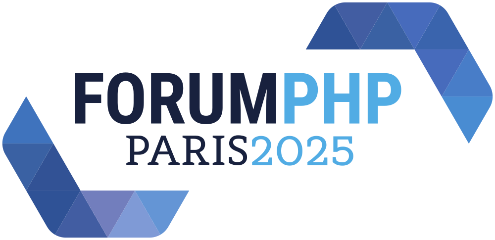
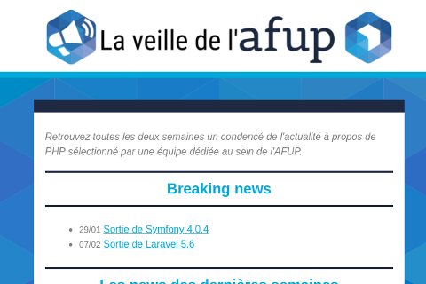
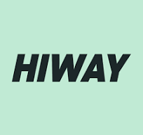

Meetup AFUP
Mai 2025
Au programme
- Rapide présentation de l'AFUP
- Les news de l'AFUP
- Les news de PHP
- Les talks
- Association créée en 2001 pour promouvoir PHP et son écosystème
- Organise des conférences (Forum PHP, AFUP Day)
- environ 15 antennes dans toute la France
- afup.org/association/antennes
- Meetup tous les mois ⏰
- Du PHP et son environnement
- Et avec des apéros ! 🍻
Nous aider ?
- Speakers ! ⚠️
- Locaux
- Sponsoring (manger && boire)
Programme de mentorat
- Demander à être mentoré
- Se proposer en tant que mentor
- C'est bénévole et gratuit !
Election du bureau le mois prochain
N'hésitez pas à nous contacter si vous souhaitez :
- présenter votre liste
- ou nous rejoindre !
Nos prochaines dates
- 26 Juin
- 24 Juillet
Meetups parisiens à venir
- mardi 3 juin : Paris Angular #3
- mercredi 4 juin : Meetup AWS
- mercredi 11 juin : Svelte Paris #2
- mercredi 18 juin : Node.js Paris #7, Chapitre 12
Nous trouver
- youtube.com/@afupparis
- bsky.app/profile/paris.afup.org
- x.com/afup_paris
Actu AFUP

Forum PHP 2025

- Jeudi 09 & Vendredi 10 octobre 2025
- Hotel New York The art of Marvel
- Disneyland Paris
- Billetterie ouverte (tarif les yeux fermés)
- CFP ouvert jusqu'au 16 juin
Baromètre des salaires
https://barometre.afup.org/campaign/2025
Actu PHP

Un peu de veille
- Jetbrains PHPverse 2025 - 17 juin, en ligne
- FrankenPHP est désormais officiellement soutenu par la PHP Foundation
- PHP 8.5 en cours de développement (prévu pour novembre 2025)
Pipe operator
$result = "Hello World"
|> htmlentities(...)
|> str_split(...)
|> fn($x) => array_map(strtoupper(...), $x)
|> fn($x) => array_filter($x, fn($v) => $v != 'O');
Mais pas que
- De nouvelles fonctions : array_first(), array_last()
- Les attributs php sur les constantes
- Possibilité de créer un warning si une valeur retournée par une fonction n'est pas utilisée : #[\NoDiscard]
- Et bien d'autres encore : https://php.watch/versions/8.5/rfcs
La veille de l'afup
Aujourd'hui
- Les conseils d'Hiway pour bien démarrer en freelancing par Alexandre Franchi
- Pourquoi vous ne devriez pas utiliser dotenv par Thomas Dutrion
On aimerait avoir vos avis !
Et pour finir
Hébergé et apéro offert par Hiway
Merci à eux !
Bon meetup !